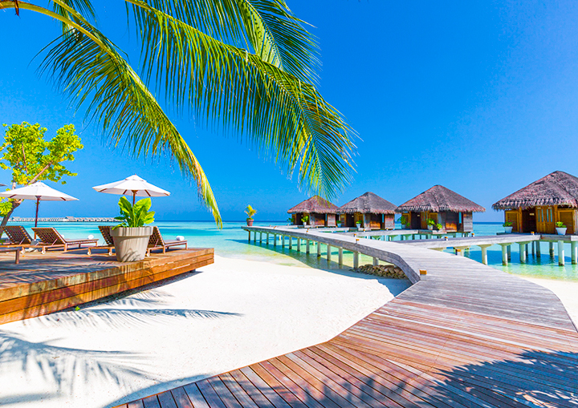
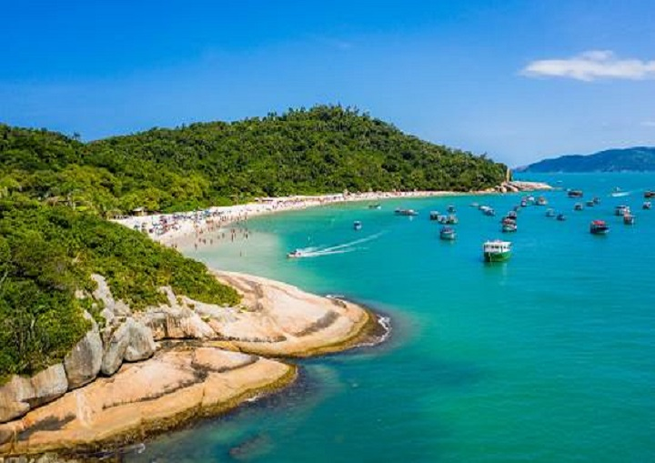
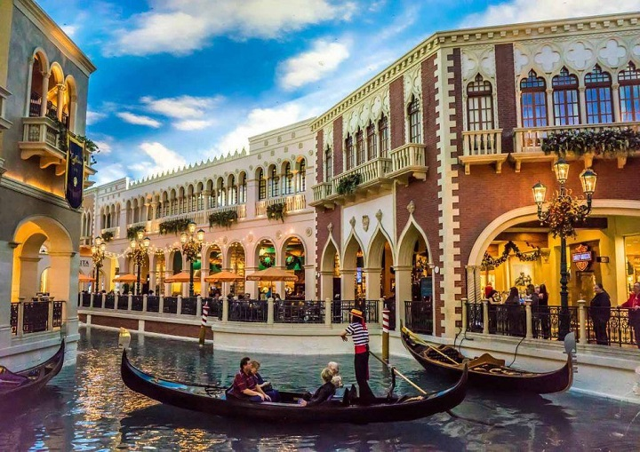
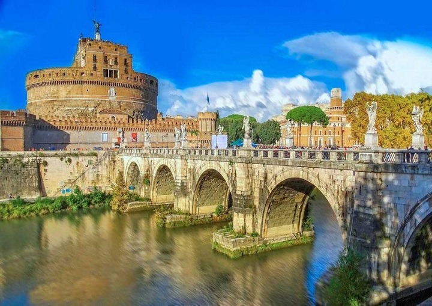
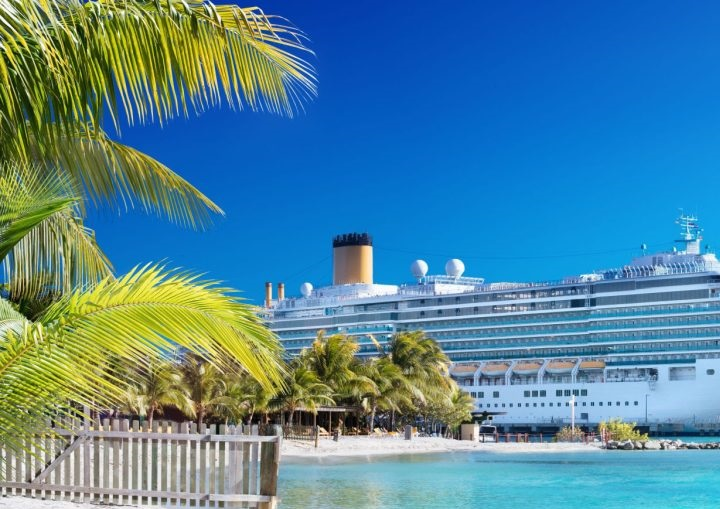

Nós somos a Buscadores de Aventuras, uma agência de viagens dedicada a transformar sonhos em
realidade. Com uma equipe apaixonada por viagens, estamos comprometidos em oferecer experiências
únicas e memoráveis para nossos clientes.
Desde destinos exóticos até roteiros personalizados, estamos aqui para ajudar você a descobrir o
mundo e criar momentos inesquecíveis. Nossa missão é proporcionar serviços de alta qualidade,
atendimento excepcional e garantir que cada viagem seja planejada com precisão e cuidado. Deixe-nos
ser seu parceiro de viagens e embarque nessa jornada com a Buscadores de Aventuras!
Nossos critérios
Escolher destinos que ofereçam experiências autênticas, diversidade cultural, belezas naturais e
atrações turísticas interessantes.
Considerar a acessibilidade dos destinos, levando em conta a disponibilidade de voos, conexões
convenientes,transporte local e deslocamento.
Garantir um excelente atendimento ao cliente, fornecendo suporte durante a viagem, orientações
claras, respostas rápidas a dúvidas e assistência em casos de imprevistos.
Compartilhamos mais detalhes sobre nossos critérios nas nossas redes
sociais.
Os Destinos mais bem avaliados
Top destinos mais buscados hoje na Buscadores de Aventuras:
Ilhas Maldivas

Um arquipélago no Oceano Índico, situado a
sudoeste da Índia.Ilha Campeche

A Ilha do Campeche é uma ilha localizada em
Florianópolis.Las vegas

Cassinos e casas noturnas marcam o cenário da
cidade que nunca dorme.Roma

Visitar a terra do Vaticano no período natalino
tem um sabor especial.Cruzeiros

Cruzeiros são a definição perfeita de viagem com
praticidade.